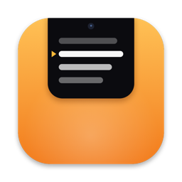

Overcue
The teleprompter under your Mac's camera. Read your script while you look your audience in the eye.
Getting started
Write or paste a script in the Overcue window, or import a text or Word file with File → Import…. Press Start (⌘↩): after a short countdown, the script scrolls in a black strip that hangs from the top of your screen, right under the camera. The amber marker shows the line to read.
Text in [square brackets] is a note for you, like [smile] or [show the slide]. It shows in amber and isn't read aloud.
Shortcuts that work from any app
⌃⌥⌘P start or pause · ⌃⌥⌘T show or hide the prompter · ⌃⌥⌘↑ / ↓ back or forward a few lines · ⌃⌥⌘= / - faster or slower. Change them in Settings → Shortcuts.
Hover over the prompter to see its buttons, and scroll on it with your trackpad or mouse to jump around.
Voice Follow (Pro)
Turn on Voice Follow and the script scrolls as you speak. Pause to think and it waits; ad-lib or skip a line and it finds its place again. Speech is recognized on your Mac: nothing is recorded or sent anywhere.
macOS asks once for the microphone and for speech recognition. If you said no, turn Overcue on in System Settings → Privacy & Security → Microphone and Speech Recognition.
During calls and recordings
By default the prompter is left out of screen sharing and recordings made by apps that use macOS screen capture, which most call and recording apps do. Turn this off in Settings → Prompter if you want to share it. Let clicks pass through lets you click whatever is under the prompter; control it with the shortcuts.
Overcue Pro
One purchase, yours to keep, no subscription: Voice Follow, unlimited scripts (the free version keeps three), and mirrored text for teleprompter glass. If you reinstall or use another Mac, choose Restore Purchase in Settings → Pro.
Common questions
Voice Follow says my language can't be recognized offline.
Add the language in System Settings → Keyboard → Dictation so macOS downloads it, or pick another language in Settings → Voice Follow.
The prompter covers something I need.
Change its width and height in Settings → Prompter, hide it with ⌃⌥⌘T, or choose another display.
My Mac has no notch.
The prompter hangs from the top of the screen the same way, close to the camera.
Contact
For help, bug reports or ideas, open a support request.